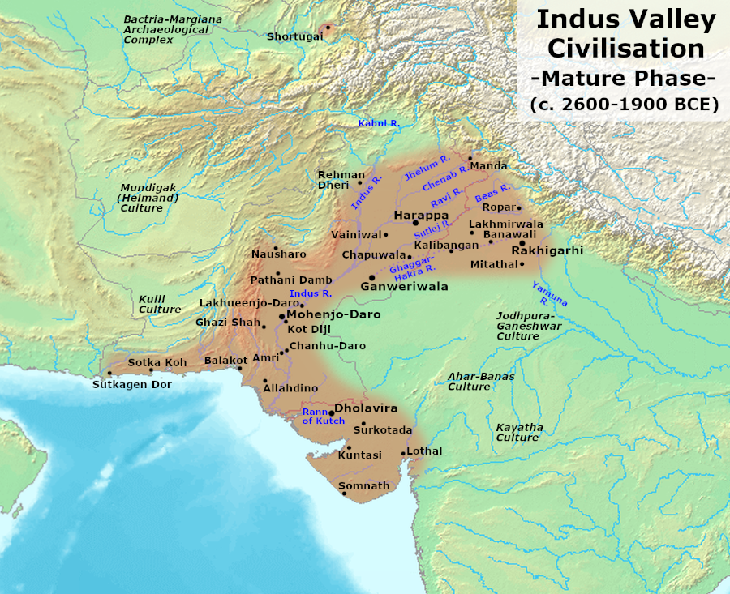
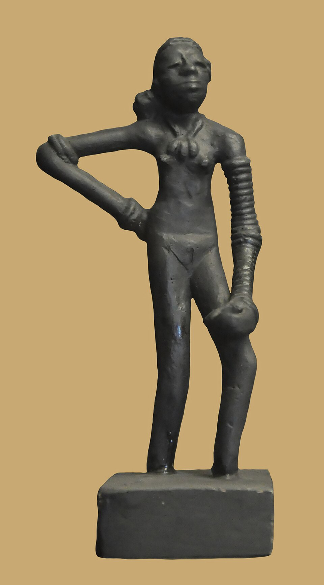
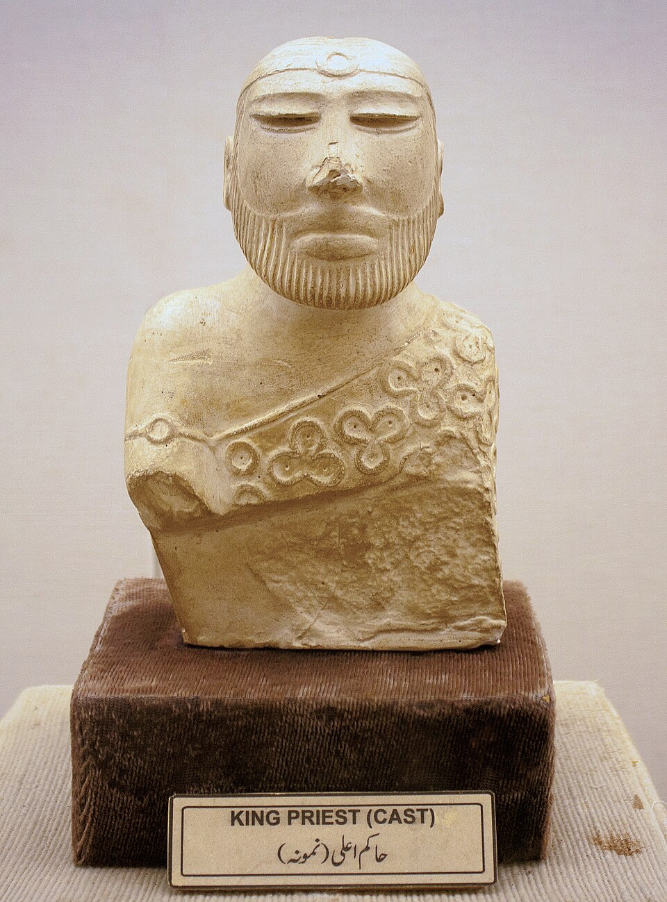
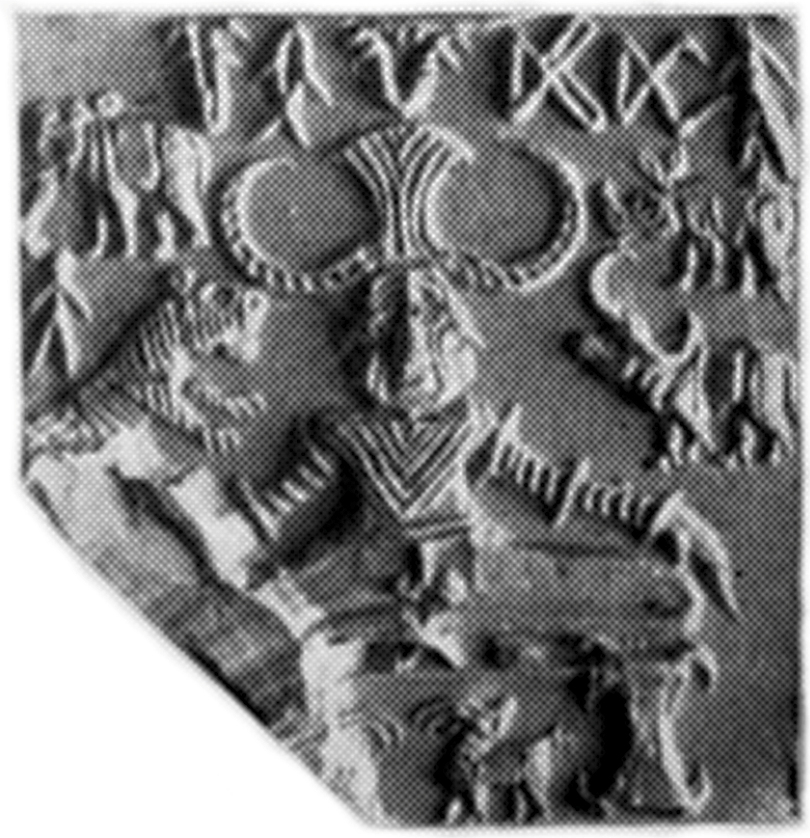
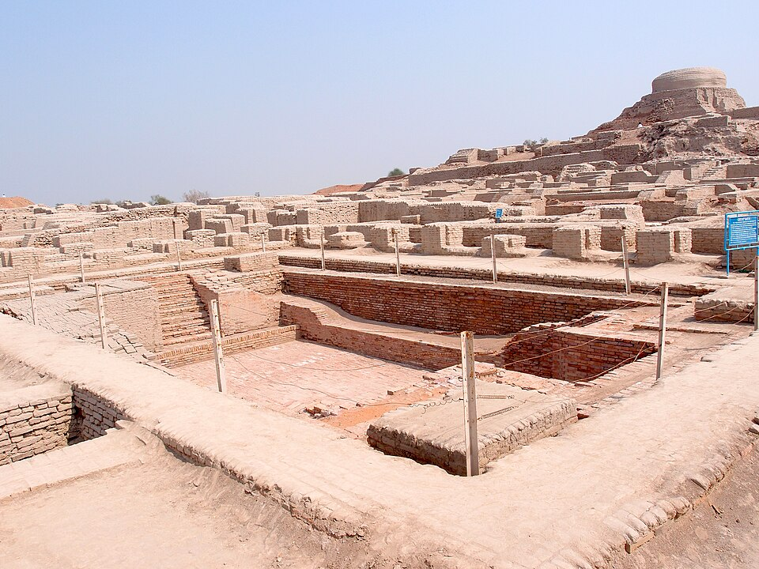
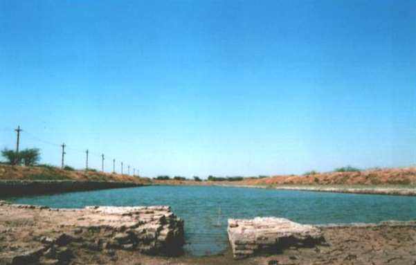
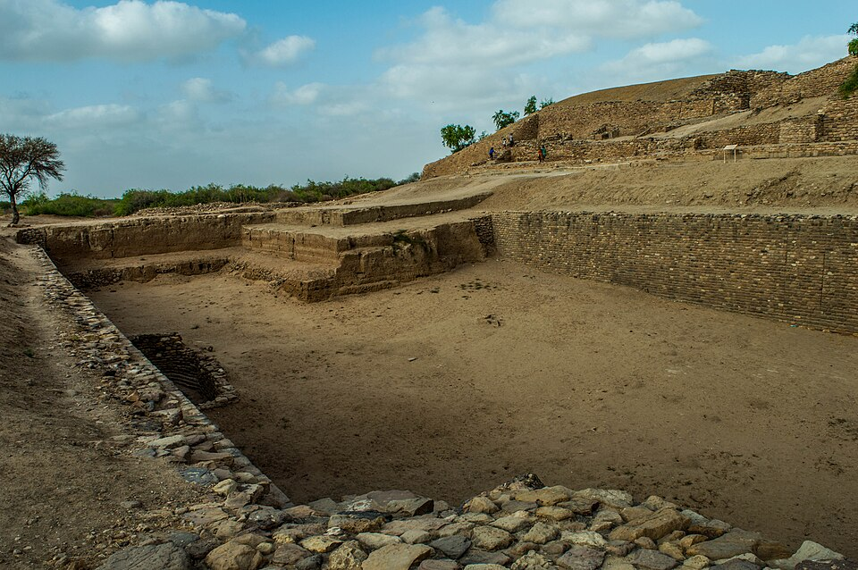

1. Harappan / Indus Civilization 2500 BC – 1750 BC Carbon-14 Dating
The earliest urban civilization in the Indian subcontinent. Belongs to the Proto-Historic Period (Bronze Age / Chalcolithic), renowned for its monumental town planning, sophisticated underground drainage, maritime trade with Sumer, and undeciphered boustrophedon script.
Oldest Name: Indus Civilization (after Indus river system).
Most Appropriate Archaeological Name: Harappan Civilization (Harappa was the first discovered type-site in 1921).
Geographical Point of View: Indus-Saraswati Civilization (largest concentration: 80% of settlements along the Ghaggar-Hakra/Saraswati river valley).

Spread across Sindh, Baluchistan, Punjab, Haryana, Rajasthan, Gujarat, Western UP, & Northern Maharashtra.
Extreme Boundary Points of the Civilization
Frequent Question in APSC/UPSC: Lucent highlights the northernmost, southernmost, easternmost, and westernmost outposts.
Manda
River: Chenab
Jammu & Kashmir (Now)
Daimabad
River: Pravara (Godavari trib.)
Ahmednagar, Maharashtra (Now)
Alamgirpur
River: Hindon (Yamuna trib.)
Meerut, Uttar Pradesh
Sutkagendor
River: Dasht (Dashk)
Makran Coast (Pak-Iran Border)
Twin Capital Cities
Harappa & Mohenjodaro
Termed the "Twin Capitals of a Vast Empire" by Stuart Piggott.
5 Major Harappan Port Cities
Lothal, Sutkagendor, Allahdino, Balakot, Kuntasi
Centers of coastal trade, shell working, and seafaring vessels.
Real Historical Artifacts & Architecture
Explore high-resolution museum photos of the actual finds described in Lucent's table. Click any artifact for in-depth GS notes.

Bronze Dancing Girl
c. 2300–1750 BCFound at Mohenjodaro by Ernest Mackay. Cast using the sophisticated Lost-Wax Technique (Cire Perdue). Stands in natural Tribhanga pose adorned with 25 bangles on left arm.

Steatite "Priest-King"
White SteatiteCarved bearded male figure wearing a filleted headband, armlet, and a shawl decorated with trefoil (clover) motifs draped over the left shoulder leaving right arm free.

Pashupati (Proto-Shiva) Seal
Chief Male DeityThree-faced deity in yogic posture with horned headgear. Surrounded by 4 animals: Elephant & Tiger (right), Rhinoceros & Buffalo (left), plus Two Deer at his feet.

The Great Bath
11.88m × 7.01mFinest example of public hygiene and ritual purification. Built of burnt bricks, coated with gypsum mortar & natural bitumen (asphalt) to prevent water leakage, with steps at North & South ends.

World's First Tidal Dock
Bhogava RiverExcavated by S.R. Rao in 1954. A massive burnt-brick basin (214m × 36m) engineered to berth ships during high tide. Center of bead-making, Persian seals, and early rice cultivation.

Dholavira Reservoirs
Khadir Bet, KutchUnique cascade of 16 rock-cut reservoirs to harvest rainwater from ephemeral streams Manhar & Mansar. Only site divided into 3 parts (Citadel, Middle Town, Lower Town) + 10-letter signboard.
Major Sites, Excavators, Rivers & Archaeological Finds
Harappa
Montgomery (Sahiwal) District, Punjab, Pakistan
Mohenjodaro
Larkana District, Sindh, Pakistan
Chanhudaro
Sindh, Pakistan (130 km South of Mohenjodaro)
Lothal
Ahmedabad District, Gujarat, India
Kalibangan
Hanumangarh District, Rajasthan, India
Dholavira
Khadir Bet, Rann of Kutch, Gujarat, India
Banawali
Fatehabad (Hissar) District, Haryana, India
Surkotada
Bhuj, Kutch District, Gujarat, India
Rakhigarhi & Daimabad
Haryana & Maharashtra
Cotton was first produced by Harappans; Greeks termed it "Sindhon" (derived from Sindh).
Trade Routes, Raw Material Imports & Sumerian Links
Lucent's verbatim commodity import table mapped to source regions with Mesopotamian trade terminology.
The Ancient Maritime Highway (Sumerian Cuneiform Inscriptions)
MELUHHA
Ancient Sumerian name for the Indus civilization region.
Mesopotamian ports Susa & Ur unearthed Harappan seals.
SUMER & AKKAD
King Sargon of Akkad (c. 2350 BC) boasted that ships from Meluhha moored at his quays.
| Imported Material | Primary Geographic Sources (As listed in Lucent) | Usage / Archaeological Example |
|---|---|---|
| Gold | Kolar (Karnataka), Afghanistan, Persia (Iran) | Jewellery, fillets, beads, amulets discovered in hoards. |
| Silver | Afghanistan, Persia (Iran), South India | Silver vessels, ornaments, mirrors (abundant at Harappa/Mohenjo). |
| Copper | Khetri Mines (Rajasthan), Baluchistan, Arabia (Oman) | Utensils, weapons, bronze alloy casting, seals, scale pans. |
| Tin | Afghanistan, Central Asia, Bihar | Alloyed with copper to manufacture bronze tools (10% tin ratio). |
| Lapis Lazuli & Sapphire | Badakhshan (Afghanistan), Shortughai trading outpost | Deep-blue gemstone beads prized in both Indus and Mesopotamia. |
| Jade | Central Asia (Pamir / Khotan region) | Amulets and prestigious polished stone beads. |
| Steatite (Soapstone) | Shaher-i-Sokhta (Iran), Kirthar Hills (Pakistan) | Primary medium for carving Indus stamp seals & Priest King statue. |
| Amethyst | Maharashtra | Bead manufacture in specialized lapidary workshops. |
| Agate, Chalcedony & Carnelians | Saurashtra and West India (Rajpipla / Khambhat) | Famous etched carnelian beads exported to Mesopotamian royal graves. |
Religion, Governance & Boustrophedon Script
Key points highlighting the secular merchant polity, absence of temples, and fertility cults.
Religious Beliefs & Deities
- No Temples: Harappans did not worship in temples; religion is deduced from terracotta figurines and seals.
- Mother Goddess (Matridevi / Shakti): Most common figurine; plant emerging from womb depicts fertility. Prevalence of Yoni worship.
- Pashupati Mahadeva (Proto-Shiva): Chief male deity sitting in yogic posture; prevalence of phallic (Lingam) worship.
- Zoolatry (Animal Worship): Mythical unicorn, humped bull (most revered on seals), tiger, elephant.
- Tree & Nature Worship: Sacred Peepal tree and water ablution (Great Bath).
- Swastika Origin: Earliest historic origin of the auspicious Swastika symbol traced to Indus seals.
Social Structure & Polity
- Merchant Class Rule: No clear monarchy or standing army found. Governance was primarily steered by an affluent class of merchants.
- Primarily Urban Society: Stratified into upper citadel (priests/administrators) and lower town (craftsmen, merchants, laborers).
- Burial Customs: Three disposal modes: • Complete Burial (Inhumation) – Most common. • Fractional Burial – Exposure to wild animals then burying bones. • Post-cremation Burial – Urn/pot burials (Surkotada).
- Double Burial: Male and female buried together in a single grave at Lothal.
Indus Script & Language
- Pictographic Script: Consists of roughly 400–600 signs, predominantly engraved on square steatite seals.
- Boustrophedon Style: Overlap of letters on Kalibangan potsherds proves writing proceeded from right-to-left and then left-to-right in alternate lines.
- Undeciphered: Remains undeciphered till date. Believed by many scholars (Father Heras, Asko Parpola) to be Proto-Dravidian.
- Comparison Note: Oldest script in India is Harappan; oldest deciphered script is Brahmi (from 5th century BC / Ashokan edicts).
Scholarly Theories on the Decline of the Indus Civilization
Frequent matching question in Prelims: Match the cause of decline with the respective scholar.
Aryan Invasion
Sir Mortimer Wheeler & Gordon Childe
Cites human skeletons found unburied at Mohenjodaro and Rigvedic verses where Indra is praised as Purandara (Destroyer of Forts). Wheeler stated: "Indra stands accused!"
Recurrent Floods
Sir John Marshall, Mackay & S.R. Rao
Evidence of multiple silt levels and repeated rebuilding phases at Mohenjodaro (7 levels of occupation) and Lothal due to catastrophic Indus river overflow.
Drying of Ghaggar-Hakra
D.P. Agrawal & Sood
Tectonic shifts diverted Sutlej towards Indus and Yamuna towards Ganga, drying up the sacred Saraswati (Ghaggar-Hakra) river basin where 80% of settlements were clustered.
Ecological Imbalance
Walter Fairservis
Overexploitation of resources, massive deforestation to fuel millions of baked bricks and bronze kilns, overgrazing by livestock leading to desertification and collapse.
Lucent High-Yield Flashcards & Practice MCQs
Test your retention on direct questions frequently asked in APSC CCE, UPSC CSE, and State PSC exams.